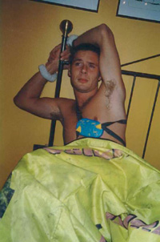
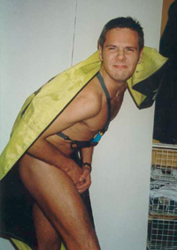

|
In bag with Henrik
Portrett-intervju med lederen for
telemarkgruppa NTNUI, Henrik Langum.
Tatt på sengekanten i ungkarskåken
en sen oktoberkveld.

Du er nå nyvalgt leder av telemarkgruppa. Hvilke tanker har du om ditt verv?
Det er en stor utfordring å lede ei så stor gruppe med skiinteresserte studenter
og jeg ønsker å holde høy aktivitet for medlemmene
gjennom hele vinteren.
Har du noe å tilføre telemarksgruppa?
Ja det tror jeg.
Spesielt når det gjelder engasjement i gruppas aktiviteter hvor
jeg håper på at det kan smitte over på den brede medlemsmassen.
Hvilken skibakgrunn har du?
Jeg ble stompeskimester i sjetteklasse
Har du vært på noen heftige Alpe-turer slik alle de tøffe gutta har?
Ja selvfølgelig, jeg fant virkelig rytmen i Østerriket!
Var du på crazy kangaroo afterski eller?
Hmm, jeg var vel egentlig på hoppuka, men fy faan Bokløv er rå live.
Hvilke sportslige ambisjoner har du foran kommende sesong?
Jeg skal delta på Alperittet og Galdhøpiggenrennet og akter å legge mest
vekt på studie av kurver hvor det sviktet litt i fjor.
(Redaksjonen tror Henrik skal konsentrere seg mest om å legge om fra plogekjøring til telemark)
Har du spilt RS?
Nei, men rytmisk sportsgymnastikk er utrolig fascinerende.
For å danne oss en profil av deg har vi "tracka" dine elektroniske spor i en 2 mnd
Periode. Her er et kort utdrag:
12/9-1548: ICA-TEMPE
13/9-1455: Consult sol
14/9-0010: REMIS
15/9-1025: Trondheim Medisinske Senter
15/9-1040: Svaneapoteket
Har du noen kommentarer til dette?
Ja , jeg må få skyte inn at jeg er medlem av klubben for høyrehånds stimuli.
Vil du melde deg ut av denne klubben hvis du mot all formodning skulle få med deg et Rolex-pøk hjem etter en heftig Raga-konsert under UKA?
Henrik: Ja!!
I sommer ble du observert i piccolo outfit utenfor
Grand hotell. Er det noe du vil snakke om?

Åh, det skyldes dametørka!
Fikk nyss i at jenter digger menn i uniform!
Hvordan er det med sexpress på jobben?
Det ser jeg på som en bonus, svarer Henrik med et tvangspreget smil om munnen.
Gruppas medlemmer er opptatt av svakhetene med vår nye leder. Gi meg 5 negative ting ved deg selv.
Jeg er nok litt hissig, strebete og for pliktoppfyllende. Dessuten har jeg en tendens til å kjøre taxi frem og tilbake for å handle på ICA`n på Tempe. Jeg er en feinschmecker og klarer meg ikke uten gourmetmat.
Har unge lovende Langum banka noen i sitt liv ?
Jeg løp etter naboen med øks en sommer!
Redaksjonen ønsker ikke å gå noe videre i detalj på denne saken som vil bli oversendt til gruppas adferdspsykolog Ivar Valstad
Hva drikker du helst ikke på fest?
Hjemmert kommer kontant fra lettere brydd lederspire
Henrik:" jeg liker ikke utviklingen på dette intervjuet"
Runaldo:" Slapp av, vi er snart ferdig med den seriøse delen"
Hvordan vil du ha hjemmerten tilberedt hvis du ble eksponert for varen?
Flambert!
Hva gjør så vår store leder på en helt vanlig onsdag?
Jeg starter dagen med en whisky, mer er det ikke å si.
Litt standard dårlig interevju-spørsmål, men si noen ord om ditt første kyss med en gutt.
Det fikk jeg i parken….
|